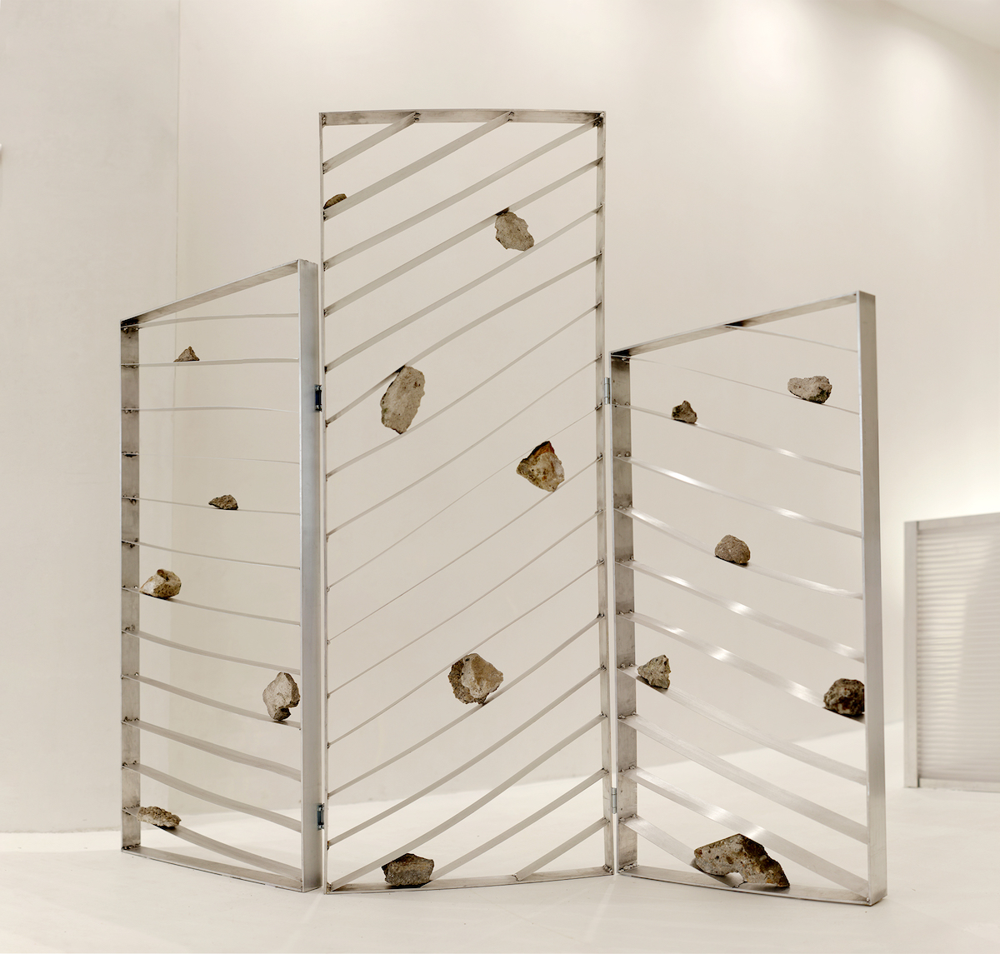

Aluminum, rocks
H.150 x W.120 x D.30cm
Rift
2023
2024 Exhibited at ISOLA, Milan
2024 Exhibited in Stockholm Furniture Fair
Concept
Ephemeral echoes
Rift is a unique space divider within ephemeral echoes, blending minimal design with organic elements. Crafted from sleek aluminum frames enclosing locally sourced stones, it embodies the juxtaposition of solidity and transience. Each stone, weathered by time, symbolizes the fleeting nature of existence, while the aluminum frames provide stability. Viewers are drawn in by the interplay of light and shadow, encouraged to contemplate the beauty of impermanence and the enduring legacy of the natural world. In Rift, "Ephemeral Echoes" invites introspection, bridging the gap between human experience and the timeless rhythms of the earth.
Process
Stones from the local
Rift's versatility stems from its meticulous integration of locally sourced rocks, a process that begins with a deep exploration of the surrounding landscape to gather stones rich in texture and character. It opens collaboration to arrange the stones within Rift's aluminum frames, experimenting with different patterns, compositions, and densities. Through this organic process, Rift emerges as a stunning fusion of man-made nature, where the rugged allure of local rocks finds expression in a new perspective of contemporary design, inviting viewers to contemplate the interplay between human creativity and the timeless rhythms of the earth.

Variations

2024 Greenhouse
Stockholm edtion


2024 ISOLA
Milan edition

2024 Because of JoaN
Amsterdam edition
Further reading
Sight Unseen
- 18 New Talents at Greenhouse, Stockholm’s Showcase
Vimeo
- A short demostration of building up/down
Duplicating Landscape
- Press kit of Stockholm furniture fair 2024
Undertone
- Press kit of the collective exhibition in Milan 2024